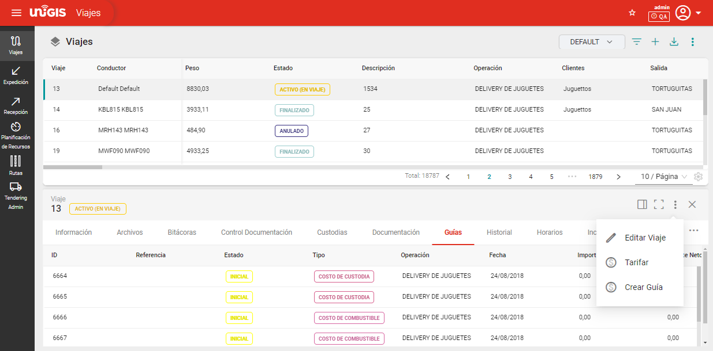
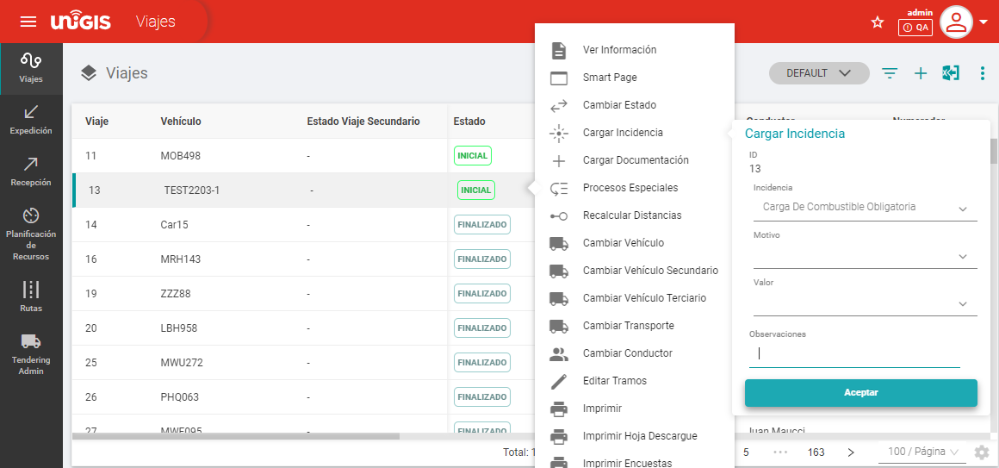

Configuración y Gestión de Tarifas#
El objetivo es construir tarifas y pensar en la mejor estrategia para su creación. A lo largo del documento, veremos ejemplos, tanto de cálculos simples como complejos, así como las variables y fórmulas básicas involucradas. Conoceremos las entidades implicadas en una tarifa, el concepto de base de cálculo, y exploraremos el universo que se desprende en la configuración de tarifas en UNIGIS.
Entidades#
La entidad principal en el modelo de tarifación es la guía, la cual proporciona información detallada sobre los conceptos obtenidos antes, durante y después de un viaje. Las entidades típicas que pueden estar presentes en una guía incluyen:
Información sobre las áreas y funciones que abarca la operación en un viaje, como la planificación de rutas, la gestión de carga, la optimización de la carga, la asignación de recursos, etc. Una lista detallada de las características y funcionalidades clave proporcionadas por la operación, como la planificación de rutas, la asignación de recursos, el seguimiento en tiempo real, la generación de informes, la gestión de excepciones, etc. Estas son algunas de las entidades comunes que se pueden encontrar en una guía en UNIGIS TMS, pero la estructura y el contenido exactos pueden variar según las necesidades y requisitos específicos de una operación.
Parada Item. Artículos transportados hacia la parada.
Parada. Punto de PickUp o Delivery del viaje.
Guía. Valor total del viaje con ajustes e incidencias. Se recomienda unicamente incluir un único viaje por guía.
Viaje. Ejección de la ruta, se comprende desde el origen hasta el último destino en la ruta, incluyendo todas las paradas intermedias.
Recorrido. Parte del viaje comprendido entre dos paradas. Se compone de un origen y un destino.
Incidencias. Evento que se da en el transcurso de una viaje/parada.
Liquidación.
Configuración#
Antes de continuar con la configuración de tarifas, es esencial comprender el cuadro general de las mismas para evitar errores y retrabajos. Es fundamental tener una definición concreta del cuadro tarifario que aplica el cliente. Esto permitirá comenzar la configuración de manera adecuada y saber, al probar estas tarifas, si es necesario realizar alguna corrección.
Guías#
La guía es el lugar donde se encuentran los conceptos valorizados con su string para envío al ERP. La vista de la guía se puede configurar según los permisos de usuario.
La guía es el sumatorio de todos los conceptos tarifables de cada viaje incluido en una guía. Existen dos tipos de guías: de cobro y de pago. Cada tipo de guía posee distintas tarifas. En esta configuración, se define cómo se agruparán los viajes dentro de las guías para tarifarse. Se pueden agrupar las siguientes entidades:
Sucursal.
Operación.
Jornada.
Transporte.
Cliente.
Vehículo.
Conductor.
Dentro de un viaje, se generan guías de costos por cada proveedor involucrado y una guía de venta por cada cliente. El objetivo es asegurar que se generen correctamente estas guías. Las guías sirven para diferentes propósitos dentro del proceso de implementación y uso del sistema. A continuación, se detallan las principales diferencias entre los tipos de guía existentes:
Guía de venta
Su propósito principal es proporcionar información detallada sobre los conceptos valorizados para los clientes, es decir, el cobro de los servicios. Cada guía de venta tarifa todos los conceptos de un viaje, con una guía por cada cliente.
¿Qué contiene una guía de venta?
Contiene agrupadores de conceptos valorizados de uno o varios viajes por el rango de fechas definido. Su contenido se centra en características, beneficios, casos de uso, estrategias de venta, diferenciadores competitivos, proceso de implementación, servicios de soporte, entre otros, generando un importe específico por cada caso de uso. Todos los importes generados en un viaje se pueden vincular con un sistema ERP externo. Las guías también contienen un flujo de estados de trabajo y conceptos según las necesidades y características de la operación, además de la información detallada por cada concepto valorizado generado por cada viaje para su tarifación.
Guía de costos
Una guía de costos busca proporcionar información detallada sobre los costos asociados con la implementación, operación y mantenimiento de toda la operación. Se centra en aspectos financieros y económicos, incluyendo costos iniciales, costos recurrentes, costos operativos, como costo de flete, retenciones, incidencias, parqueo, casetas de peaje, entre otras. Con la misma lógica, genera los importes para vincularlos a sistemas de ERP externos.
¿Qué contiene una guía de costos?
Su propósito principal es ser una herramienta que proporciona información para genstionar y optimizar los costos financieros y económicos, como costos de implementación, costos recurrentes, costos operativos, beneficios y ahorros potenciales, análisis de ROI y consideraciones adicionales relacionadas con los costos, con el objetivo de tomar decisiones informadas sobre la inversión de la operación.
Generar Guías#
En UNIGIS TMS, se permite generar guías de dos formas: manualmente o automáticamente. La creación de una guía puede ocurrir de dos maneras:
Manual: La guía se genera de manera manual por un usuario desde un viaje.
Fleet –> Viajes
Automática: La guía se crea automáticamente durante la transición de estados de un viaje.
Durante cualquier fase de un viaje, ya sea al inicio, durante su ejecución o al finalizarlo, es posible generar las guías o documentación necesaria. Esto se logra configurando el proceso para que se ejecute de acuerdo a las necesidades específicas desde administrador del sistema –> SCE –> Procesos.
Este enfoque automatizado simplifica el proceso al integrar la generación de guías en las etapas clave de un viaje, lo que garantiza una documentación completa y oportuna en cada paso del proceso logístico.
Tarifación#
La tarifación es el proceso de determinación y establecimiento de los costos asociados con el uso o venta del servicio, la tarifación puede variar significativamente según el modelo de negocio, los factores considerados y la personalización de las tarifas. Es fundamental que los clientes comprendan claramente los factores que influyen en los costos.
Cada viaje en el sistema contiene guías que operan con tarifación y fórmulas que, mediante flujos de trabajo específicos, generan un importe según sea su venta o costo. Estas son listas de precios que valorizan todos los conceptos que se cruzan contra los viajes. Las tarifas se componen de valores, filtros, tipos de guía y conceptos, incluyendo:
Entidad: La entidad a la cual se aplica la tarifa, ya sea en un viaje, parada, parada item, tramo, entre otros.
Fórmula: El valor o expresión que genera el cálculo.
Base de Cálculo: Si se llena, se guardará en una variable el valor calculado del campo fórmula.
Entidad Atributo Salida: Si se llena, se guardará en un campo de la entidad el valor calculado del campo fórmula.
Concepto: Si tiene, genera un Concepto Valorizado Guía, creando una línea de concepto al mostrar el cálculo de la tarifa.
Fecha de Vigencia: Vigencia de la tarifa; si se actualiza, esta se vence creando una línea nueva.
Filtros: Definen hacia dónde apunta el valor o fórmula de la tarifa. Si no se seleccionan campos, será aplicable de manera general.
Las tarifas se aplican a un tipo de guía y tienen un plazo de vigencia definido. Pueden contener parámetros para aplicarse a viajes, depósitos, transportes, cargas, distancias, entre otros, según su categoría. La tarifación se establece considerando diversos factores, como el tipo de parada, cliente, volumen, peso, horario, distancia, vehículos, operación, sucursal y productos.
Estas configuraciones permiten a los clientes personalizar las tarifas según sus necesidades específicas y garantizar una comprensión clara de cómo se determinan los costos en el sistema UNIGIS TMS.
Proceso Tarifación#
Las tarifas se aplican por tipo de guía, ya sea de costo o de venta, y son aplicables al valor del viaje. El valor se suma por variable y puede aplicarse a diferentes entidades como un viaje, un vehículo, o cualquier otra entidad específica indicada. Si no se selecciona ninguna entidad específica, se aplica como una regla general.
Cada registro representa una tarifa y valida las entidades de la tarifación, filtrando las coincidencias con ese viaje. Las tarifas pueden seleccionarse para una entidad individual o para entidades agrupables, lo que permite una mayor flexibilidad en la aplicación de los costos.
La tarifación en UNIGIS TMS puede realizarse de manera automatizada o manual, dependiendo de las necesidades y preferencias del usuario. Este proceso implica calcular los costos o ventas asociados con un viaje específico, considerando diversos factores y parámetros.
Viaje = Guías generadas de costo y venta.
Manual: Sobre un viaje seleccionar tarifar, manualmente. la tarifación manual ofrece flexibilidad al usuario para modificar o crear nuevas tarifas según sea necesario, llenando los campos requeridos en el formulario de creación de tarifas.
Fleet –> Viajes
Automática: La tarifación por cambio de estado se realiza de forma automática, por ejemplo, cuando se cambia el estado de un viaje de «inicial» a «programado». Durante este cambio de estado, se generan automáticamente las guías de costos y de venta acumulando los importes para cada estado y permitiendo previsualizar la rentabilidad de cada viaje. El proceso de tarifación se ejecuta en el momento en que ocurre el cambio de estado dentro del viaje.
administrador del sistema –> SCE –> Procesos.
Fórmulas#
Estas fórmulas pueden incluir una variedad de variables y parámetros, como tarifas por kilómetro recorrido, tiempo de espera, tipo de carga, condiciones climáticas, entre otros. Esta capacidad de personalización permite a las empresas ajustar la tarifación según su modelo de negocio, políticas internas y requisitos del cliente.
Valor/Formula: En una tarifa, se asigna un valor numérico representando el valor de la tarifa. En el caso de que sea una fórmula, aquí se describe el cálculo que debe realizar, utlizando las expresiones matemáticas nCalc. Ejemplo: [Valor.Incidencia] * 10.
Base de cálculo: Se define una base de cálculo, que funciona como una variable en la que se guardar el valor o dato calculado.
Dentro de una fórmula, se puede utilizar la misma funcionalidad que las tarifas por filtro, y los valores indicados estarán relacionados con un concepto.
La fórmula proporciona el importe de la base de cálculo. En la tabla de bases de cálculo, se define el nombre de la variable y se asigna una consulta SQL (query) para ejecutar. Cuando se llama a la variable en una fórmula, se utiliza el resultado de esta consulta y se guarda.
Incidencias#
Para facilitar la gestión de incidencias, UNIGIS TMS ofrece herramientas que permiten registrarlas fácilmente, ya sea a través de la aplicación móvil o directamente desde el registro del viaje. Una vez registradas, las incidencias pueden seguir un flujo de trabajo estructurado, con diferentes estados que indican su validación y resolución.
Crear incidencia: Administración del Sistema –> SCE –> Catálogos –> Tipo de Incidencia –> +
Aplicar incidencia: Fleet –> Viajes –> Seleccionar viaje con clic derecho + Cargar Incidencia.
Además, algunas incidencias pueden ser gestionadas de forma automatizada, lo que agiliza su resolución y reduce la intervención manual. Esto garantiza una respuesta rápida a los problemas que surjan durante los viajes, mejorando la eficiencia operativa y la calidad del servicio.
Liquidación#
El proceso de liquidación corresponde a un tipo de guía siguiendo un flujo de trabajo propio, con diferentes estados que reflejan el progreso y la validación de la liquidación. Este flujo de trabajo puede ser configurado según las necesidades específicas de la operación, lo que garantiza una gestión eficiente y transparente del proceso.
Estos estados pueden disponer de uno o varios métodos que se accionan dependiendo del flujo de trabajo establecido.
Adminitración del Sistema –> SCE –> Flujos de Trabajo –> Estado Liquidación.
Periodo Liquidación:
Los periodo de liquidación se establecen para organizar y procesar los costos y ventas asociados a los viajes y operaciones. Aquí se detalla su funcionamiento y configuración:
Se debe disponer de periodos a liquidar, ya sea por periodo fijo o por periodo dinámico. Los periodos pueden comprender tipos de operación, vigencia, cliente, transporte, y tipos de guía. Si no se seleccionan los campos, se podrán aplicar de manera general.
Las guías listas para liquidar se pueden enviar a un ERP para la liquidación por un lapso establecido esto de manera automática o manual, ya sea semanal, quincenal o mensualmente.
En un caso particular, una guía puede asociarse a varios viajes por un valor fijo. Puede ocurrir por mes, conectando los viajes del mes al costo de esa misma guía, dependiendo del arreglo o acuerdo con el cliente.
Adminitración del Sistema –> Tarifas –> Catálogos –> Periodo Liquidación.
Tipo Liquidación:
Cada tipo de liquidación está asociado a un tipo de guía y representa los datos necesarios al momento de la carga para generar la liquidación correspondiente.
Adminitración del Sistema –> Tarifas –> Catálogos –> Tipo Liquidación.